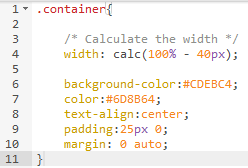

Who Am I?

I happen to be a lonely search button that has been implemented into this test site for no reason at all besides to show that you can create an artificial search button. I serve no purpose. I have no meaning. Go ahead. Click me to see how i bring you to this very same web page!
SearchAnother new and awesome CSS feature is the calc() function. It allows you to do simple arithmetic calculations in CSS. You can use it anywhere a length or a size is required. What is even cooler, is that you can freely mix different units, like percentages and pixels. This makes a lot of layout hacks that you might have used in the past obsolete. The best news? It works in IE9 and up, prefix-free.
Learn more about the calc() function here , or see a compatibility table .
Generated content is a powerful tool in the hands of developers, made available by the [::before] and [::after] pseudo elements. This feature lets you use less HTML to achieve the same layouts. This is especially beneficial in cases where you need extra box shadows or other visual elements that would require extra spans or divs. In the end, you get a more minimal and semantically correct HTML.
CSS3 also gives pseudo elements access to counters , which can be incremented with a CSS rule. They can also access attributes from the parent elements that contain them.
Generated content is supported everywhere, including IE9 and up.
Gradients give web designers the power to create smooth transitions between colors without having to resort to images. CSS gradients also look great on retina displays, because they are generated on the fly. They can be linear or radial, and can be set to repeat. They have been around for some time, but after a few minor syntax changes over the last months, they are finally available nearly everywhere, prefix-free!
See a detailed tutorial here , and a compatibility table here.